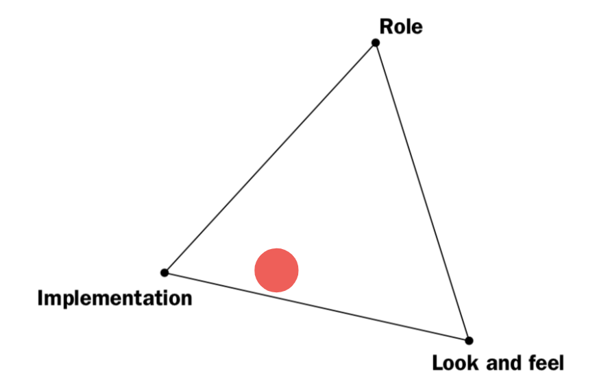
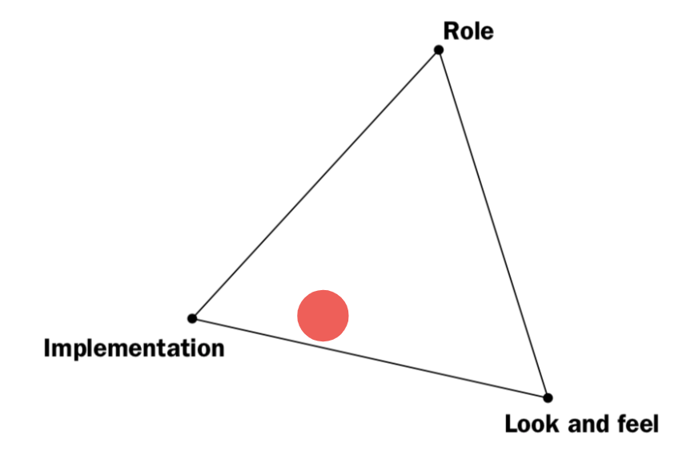

Concept
We planned to set up a set of fishing equipment right next to the fountain, hoping to create contrast to reignite people’s curiosity for daily environment and attract them to interact with the fountain in Bryant Park.

Intended Interactions

On-site Setting
 

Observations
Curious, playful and explorative
• Adults find it playful and some are curious about what is inside the fountain
• Kids are generally more explorative and curious about how to operate the fishing rod
Draws attention to the fountain
• A lot more people were looking into the fountain
Noticeable
• Higher resolution & fidelity
• Way more attention and smiles from adults!
Approachable
• Most adults still won’t touch the fishing rod
• Set up was very formal, the stand was made out of mailing tube and masking tape: looks
fragile! And it
did broke.
• Not very kid-friendly
• Cannot assume people would know how to interact with it without instruction
• The sign wasn't clear
Sustaining the Interaction
• Kids spend a lot more time interacting with the fishing rod
• Adults spend more time observing
Reflection & Feedbacks
- Make it into an installation: make the fishing rod reel itself?
- Make it as an activity: more sets of fishing rods?
- One of possible reasons that may cause the lack of interaction from adults is that there is nothing inside the fountain/water. Put something under the water attached to the fishing line and encourge people to pull it out from the water.
- Be careful what is floating or what is inside the water, think about the form.